Reporte tecnico - Trabajo 01
Optimizacion numerica y combinatoria
1 Estructura del Blog
1.1 Introduccion
Este blog presenta el desarrollo del trabajo con una estructura pensada para explicar de forma clara tanto el planteamiento como los resultados obtenidos. El objetivo principal es mostrar, de manera organizada, como se abordaron dos problemas de optimizacion con naturalezas distintas, permitiendo comparar estrategias y extraer conclusiones utiles a partir de la experiencia. Por un lado, se trabaja la Optimizacion Numerica, centrada en el analisis de funciones y en la aplicacion de metodos de descenso por gradiente para encontrar soluciones eficientes. Por otro lado, se desarrolla la Optimizacion Combinatoria, enfocada en el problema del viajante aplicado al recorrido de los 96 departamentos de Francia, un caso mucho mas complejo por la enorme cantidad de combinaciones posibles.
La comparacion entre ambos enfoques resulta importante porque permite entender como cambian las herramientas segun la naturaleza del problema: mientras los metodos basados en gradiente aprovechan informacion analitica de la funcion, los algoritmos heurísticos y metaheuristicos buscan buenas soluciones en espacios discretos donde no siempre es posible aplicar metodos exactos de manera practica. En conjunto, el trabajo deja como aprendizaje principal que no existe una unica estrategia universal de optimizacion, sino que la eleccion del metodo depende del tipo de problema, del costo computacional y de la calidad de solucion que se desea alcanzar.
Para la parte combinatoria, la construccion del conjunto de datos de ciudades y trayectos requirio una etapa previa de extraccion de informacion. Esta se realizo mediante web scraping sobre el sitio VINCI Autoroutes, a partir del cual se obtuvieron los datos necesarios para estructurar la instancia trabajada en el problema del viajante. El script utilizado para este procedimiento hace parte del proyecto y se incluye como soporte tecnico del proceso de recoleccion y preparacion de datos en el archivo web_scrapping.js.
1.2 Secciones principales
En particular, una parte importante del codigo, la organizacion tecnica del proyecto y el ensamblaje del reporte fueron realizados por Carlos, quien retomo lo ya avanzado, completo componentes faltantes y estructuro la version final presentada en este blog. Por tanto, la contribucion individual principal corresponde a Carlos, tanto en la programacion como en la consolidacion del trabajo entregado.
2 Parte 1: Optimización Numérica
2.1 Funciones de prueba
Para evaluar el comportamiento de los métodos de optimización numérica, se seleccionaron varias funciones de prueba ampliamente utilizadas en la literatura. En conjunto, estas funciones benchmark ofrecen paisajes de optimización con propiedades diversas, como multimodalidad, distintos niveles de separabilidad y valles estrechos, por lo que constituyen una base adecuada para comparar la convergencia y la robustez de distintos algoritmos frente a problemas de diferente dificultad (Jamil and Yang 2013).
2.1.1 Función de Rosenbrock
La función de Rosenbrock es un caso clásico en optimización continua. Su principal dificultad es la presencia de un valle largo, curvo y angosto que conduce al mínimo global. Aunque la función no es extremadamente multimodal, muchos algoritmos tienen dificultades para avanzar de manera estable dentro de este valle y acercarse con precisión a la solución.
\[ f(x, y) = (1 - x)^2 + 100(y - x^2)^2 \]
Su mínimo global se encuentra en \((1,1)\), donde \(f(x,y)=0\).
2.1.2 Función de Rastrigin
La función de Rastrigin es ampliamente usada para evaluar algoritmos en escenarios multimodales. Su superficie contiene una gran cantidad de mínimos locales distribuidos periódicamente, lo que dificulta la búsqueda del mínimo global. Por esta razón, resulta muy útil para analizar la capacidad de exploración de un método de optimización.
\[ f(\mathbf{x}) = 10n + \sum_{i=1}^{n} \left(x_i^2 - 10 \cos(2\pi x_i)\right) \]
Su mínimo global se encuentra en \(\mathbf{x}=\mathbf{0}\), donde \(f(\mathbf{x})=0\).
2.1.3 Función de Schwefel
La función de Schwefel representa un reto importante debido a que su mínimo global está alejado del origen y la superficie presenta muchas irregularidades. Esto obliga a los algoritmos a explorar con cuidado el dominio de búsqueda y evita que una estrategia demasiado local encuentre con facilidad la mejor solución.
\[ f(\mathbf{x}) = 418.9829\,n - \sum_{i=1}^{n} x_i \sin\left(\sqrt{|x_i|}\right) \]
Su mínimo global se alcanza aproximadamente cuando \(x_i = 420.9687\) para todo \(i\).
2.1.4 Función de Griewank
La función de Griewank combina un crecimiento cuadrático moderado con un componente oscilatorio multiplicativo. Esta estructura genera varios mínimos locales, aunque de una forma menos agresiva que en Rastrigin. Por ello, es útil para estudiar el comportamiento de los algoritmos en superficies multimodales con una complejidad intermedia.
\[ f(\mathbf{x}) = 1 + \sum_{i=1}^{n}\frac{x_i^2}{4000} - \prod_{i=1}^{n}\cos\left(\frac{x_i}{\sqrt{i}}\right) \]
Su mínimo global se encuentra en \(\mathbf{x}=\mathbf{0}\), donde \(f(\mathbf{x})=0\).
2.1.5 Función de Goldstein-Price
La función de Goldstein-Price es una función bidimensional con una superficie compleja y altamente irregular. Presenta cambios pronunciados en la curvatura y varias zonas que pueden desviar la trayectoria de búsqueda, por lo que es adecuada para evaluar la precisión y estabilidad de los algoritmos en problemas no triviales.
\[ \begin{aligned} f(x,y) &= \left[1 + (x+y+1)^2(19 - 14x + 3x^2 - 14y + 6xy + 3y^2)\right] \\ &\quad \cdot \left[30 + (2x-3y)^2(18 - 32x + 12x^2 + 48y - 36xy + 27y^2)\right] \end{aligned} \]
Su mínimo global se encuentra en \((0,-1)\), donde el valor de la función es \(3\).
2.1.6 Función Six-Hump Camel
La función Six-Hump Camel es otro ejemplo clásico en dos dimensiones. Su interés principal radica en que posee varios puntos críticos y dos mínimos globales simétricos. Esto permite evaluar si un algoritmo logra identificar soluciones equivalentes en distintas regiones del espacio de búsqueda.
\[ f(x,y) = \left(4 - 2.1x^2 + \frac{x^4}{3}\right)x^2 + xy + \left(-4 + 4y^2\right)y^2 \]
Sus mínimos globales se encuentran aproximadamente en \((0.0898,-0.7126)\) y \((-0.0898,0.7126)\).
2.1.7 Gráficos de superficie y contorno
Para cada una de estas funciones se deben incluir dos tipos de visualización:
- un gráfico de superficie en 3D, para observar la forma general del paisaje de optimización
- un gráfico de contorno en 2D, para identificar valles, picos, mínimos locales y zonas de mayor dificultad
Estas figuras complementan la descripción matemática, ya que permiten entender visualmente por qué ciertas funciones favorecen la convergencia rápida y por qué otras representan un reto mayor para los algoritmos estudiados.
2.2 Optimización con Descenso por Gradiente
Una vez definidas las funciones de prueba, el siguiente paso consiste en estudiar el comportamiento del descenso por gradiente sobre cada una de ellas. El descenso por gradiente es un método de optimización local que busca minimizar una función objetivo mediante actualizaciones sucesivas de la forma \[ x_{k+1} = x_k - \alpha \nabla f(x_k), \] donde \(x_k\) es la solución en la iteración \(k\), \(\alpha\) es la tasa de aprendizaje y \(\nabla f(x_k)\) es el gradiente de la función objetivo evaluado en ese punto. En cada paso, el método avanza en la dirección opuesta al gradiente para reducir el valor de la función y aproximarse a un mínimo. Aunque suele ser eficiente en funciones suaves, su desempeño depende en gran medida de la geometría de la función objetivo y de la condición inicial elegida (Nocedal and Wright 2006).
2.2.1 Metodología
Para evaluar la estabilidad del método y evitar conclusiones basadas en una sola corrida, se realizaron múltiples ejecuciones con condiciones iniciales aleatorias. En cada experimento, el algoritmo parte de un punto inicial generado dentro del dominio de la función. A partir de allí, se calcula el gradiente de la función objetivo para determinar la dirección de mayor descenso, y luego se actualiza iterativamente la solución. El criterio de parada se estableció mediante una tolerancia sobre la norma del cambio entre iteraciones, de modo que el algoritmo se detiene cuando dicho cambio es menor que 10^-6; en caso contrario, la corrida finaliza al alcanzar el número máximo de iteraciones definido para cada función.
El enunciado propone comparar corridas para \(n = 100\), \(500\) y \(1000\). En los cuadernos de análisis se consolidaron resultados para varios casos en 2D y 3D, con énfasis en las funciones de Rosenbrock, Rastrigin, Schwefel, Griewank, Goldstein-Price y la función de las seis jorobas de camello, que pasaremos a llamar Six-Hump Camel. Además, el contenido se organizó en resúmenes por función, dimensión y número de corridas.
Este procedimiento permite observar no solo si el método encuentra soluciones cercanas al mínimo global, sino también con qué frecuencia lo hace, cuánta dispersión presentan los resultados finales y cuál es el costo computacional asociado.
2.2.2 Visualización de la función objetivo
2.2.2.1 Rosenbrock
| Gradiente en 2D | Gradiente en 3D |
|---|---|
| \[ \nabla f(x, y) = \begin{bmatrix} -400x(y - x^2) - 2(1 - x) \\ 200(y - x^2) \end{bmatrix} \] | \[ \nabla f(x, y, z) = \begin{bmatrix} -400x(y - x^2) - 2(1 - x) \\ 200(y - x^2) - 400y(z - y^2) - 2(1 - y) \\ 200(z - y^2) \end{bmatrix} \] |
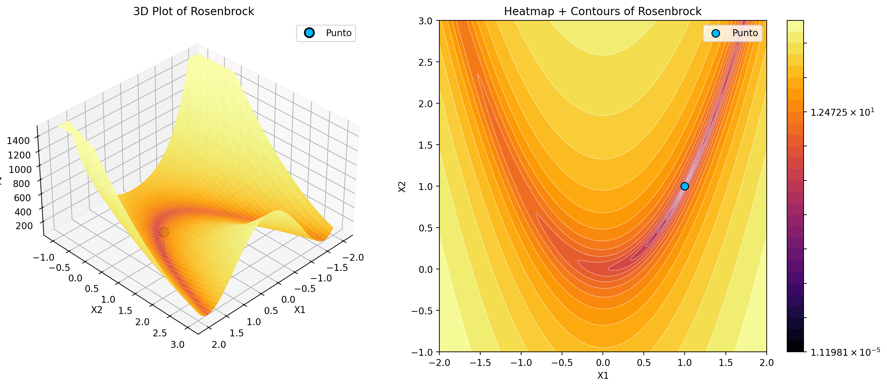
2.2.2.2 Rastrigin
| Gradiente en 2D | Gradiente en 3D |
|---|---|
| \[ \nabla f(x, y) = \begin{bmatrix} 2x + 20\pi \sin(2\pi x) \\ 2y + 20\pi \sin(2\pi y) \end{bmatrix} \] | \[ \nabla f(x, y, z) = \begin{bmatrix} 2x + 20\pi \sin(2\pi x) \\ 2y + 20\pi \sin(2\pi y) \\ 2z + 20\pi \sin(2\pi z) \end{bmatrix} \] |

2.2.2.3 Schwefel
| Gradiente en 2D | Gradiente en 3D |
|---|---|
| \[ \nabla f(x, y) = \begin{bmatrix} -\sin\left(\sqrt{|x|}\right) - \frac{x \cos\left(\sqrt{|x|}\right)}{2\sqrt{|x|}} \\ -\sin\left(\sqrt{|y|}\right) - \frac{y \cos\left(\sqrt{|y|}\right)}{2\sqrt{|y|}} \end{bmatrix} \] | \[ \nabla f(x, y, z) = \begin{bmatrix} -\sin\left(\sqrt{|x|}\right) - \frac{x \cos\left(\sqrt{|x|}\right)}{2\sqrt{|x|}} \\ -\sin\left(\sqrt{|y|}\right) - \frac{y \cos\left(\sqrt{|y|}\right)}{2\sqrt{|y|}} \\ -\sin\left(\sqrt{|z|}\right) - \frac{z \cos\left(\sqrt{|z|}\right)}{2\sqrt{|z|}} \end{bmatrix} \] |
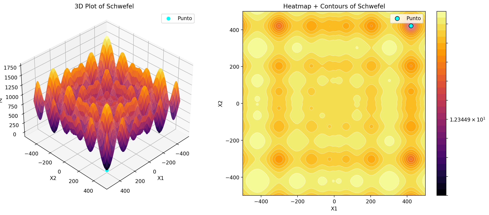
2.2.2.4 Griewank
| Gradiente en 2D | Gradiente en 3D |
|---|---|
| \[ \nabla f(x, y) = \begin{bmatrix} \frac{x}{2000} + \frac{1}{\sqrt{1}} \sin\left(\frac{x}{\sqrt{1}}\right) \cos\left(\frac{y}{\sqrt{2}}\right) \\ \frac{y}{2000} + \frac{1}{\sqrt{2}} \cos\left(\frac{x}{\sqrt{1}}\right) \sin\left(\frac{y}{\sqrt{2}}\right) \end{bmatrix} \] | \[ \nabla f(x, y, z) = \begin{bmatrix} \frac{x}{2000} + \frac{1}{\sqrt{1}} \sin\left(\frac{x}{\sqrt{1}}\right) \cos\left(\frac{y}{\sqrt{2}}\right) \cos\left(\frac{z}{\sqrt{3}}\right) \\ \frac{y}{2000} + \frac{1}{\sqrt{2}} \cos\left(\frac{x}{\sqrt{1}}\right) \sin\left(\frac{y}{\sqrt{2}}\right) \cos\left(\frac{z}{\sqrt{3}}\right) \\ \frac{z}{2000} + \frac{1}{\sqrt{3}} \cos\left(\frac{x}{\sqrt{1}}\right) \cos\left(\frac{y}{\sqrt{2}}\right) \sin\left(\frac{z}{\sqrt{3}}\right) \end{bmatrix} \] |

2.2.2.5 Goldstein-Price
| Gradiente en 2D |
|---|
| \[ \nabla f(x, y) = \begin{bmatrix} \frac{\partial f}{\partial x} \\ \frac{\partial f}{\partial y} \end{bmatrix} \] |

2.2.2.6 Six-Hump Camel
| Gradiente en 2D |
|---|
| \[ \nabla f(x, y) = \begin{bmatrix} (8 - 8.4x^2 + 2x^4)x + y \\ x + (-8 + 16y^2)y \end{bmatrix} \] |
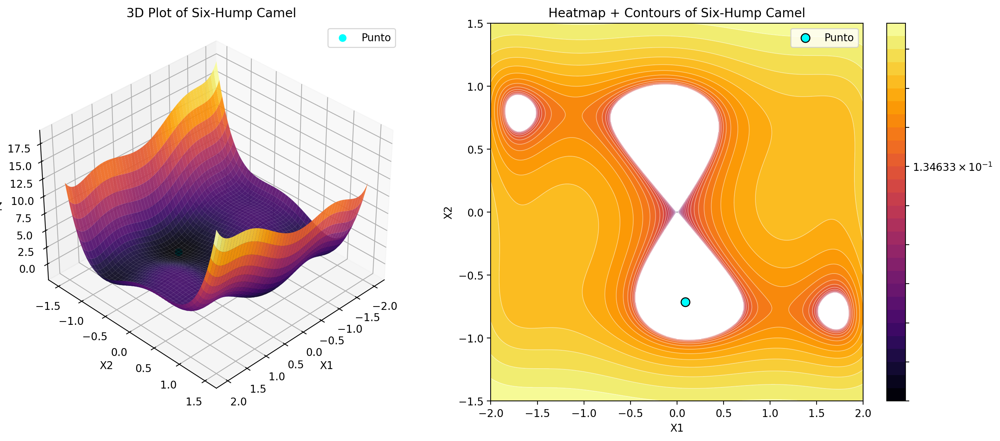
2.2.3 Tabla resumen de desempeño
A continuación se muestra el detalle específico de las funciones evaluadas en ambas dimensiones, o en una sola cuando corresponde. Esto permite observar con mayor claridad cómo cambia el desempeño del método cuando aumenta el número de corridas y cómo se distribuyen los resultados finales.
2.2.3.1 Rosenbrock
| Dimensión | Corridas | Mejor valor final | Peor valor final | Promedio del valor final | Mediana del valor final | Desv. del valor final | Promedio de evaluaciones | Promedio de iteraciones |
|---|---|---|---|---|---|---|---|---|
| 2D | 100 | 0.00 | 5.20 | 2.27 | 1.86 | 1.71 | 1002.00 | 1000.00 |
| 2D | 500 | 0.00 | 5.65 | 1.49 | 0.75 | 1.65 | 1002.00 | 1000.00 |
| 2D | 1000 | 0.00 | 5.65 | 1.49 | 0.75 | 1.59 | 1002.00 | 1000.00 |
| 3D | 100 | 0.09 | 4.32 | 2.26 | 2.59 | 1.10 | 1002.00 | 1000.00 |
| 3D | 500 | 0.09 | 4.79 | 2.02 | 1.87 | 1.17 | 1002.00 | 1000.00 |
| 3D | 1000 | 0.03 | 4.79 | 2.03 | 2.18 | 1.17 | 1002.00 | 1000.00 |
Se evidencia que encuentra soluciones muy cercanas al óptimo en 2D, pero el valle estrecho y el acoplamiento en 3D dificultan ligeramente el desempeño promedio.
2.2.3.2 Rastrigin
| Dimensión | Corridas | Mejor valor final | Peor valor final | Promedio del valor final | Mediana del valor final | Desv. del valor final | Promedio de evaluaciones | Promedio de iteraciones |
|---|---|---|---|---|---|---|---|---|
| 2D | 100 | 1.99 | 40.79 | 22.45 | 24.87 | 10.33 | 29.04 | 27.04 |
| 2D | 500 | 0.99 | 40.79 | 17.04 | 16.91 | 10.54 | 28.85 | 26.85 |
| 2D | 1000 | 0.99 | 40.79 | 16.48 | 16.91 | 10.58 | 29.05 | 27.05 |
| 3D | 100 | 1.99 | 58.70 | 31.95 | 35.32 | 13.04 | 30.10 | 28.10 |
| 3D | 500 | 1.99 | 58.70 | 22.71 | 21.39 | 12.31 | 31.92 | 29.92 |
| 3D | 1000 | 0.99 | 58.70 | 21.55 | 20.89 | 11.74 | 32.04 | 30.04 |
Se observa que sufre severamente debido a sus múltiples mínimos locales; converge rápido pero se evidencia que queda atrapado casi de inmediato.
2.2.3.3 Schwefel
| Dimensión | Corridas | Mejor valor final | Peor valor final | Promedio del valor final | Mediana del valor final | Desv. del valor final | Promedio de evaluaciones | Promedio de iteraciones |
|---|---|---|---|---|---|---|---|---|
| 2D | 100 | -15.32 | 985.87 | 369.84 | 416.60 | 254.49 | 10002.00 | 10000.00 |
| 2D | 500 | -15.32 | 1225.63 | 430.81 | 401.60 | 317.57 | 10002.00 | 10000.00 |
| 2D | 1000 | -15.32 | 1225.63 | 376.59 | 341.46 | 291.55 | 10002.00 | 10000.00 |
| 3D | 100 | -7.73 | 1203.50 | 538.47 | 542.68 | 325.66 | 10002.00 | 10000.00 |
| 3D | 500 | -7.73 | 1450.16 | 650.61 | 660.48 | 354.56 | 10002.00 | 10000.00 |
| 3D | 1000 | -7.73 | 1450.16 | 565.92 | 517.55 | 351.71 | 10002.00 | 10000.00 |
Se denota un comportamiento muy polarizado y altamente dependiente del punto inicial; se evidencia que consume el total de las iteraciones con una desviación estándar altísima.
2.2.3.4 Griewank
| Dimensión | Corridas | Mejor valor final | Peor valor final | Promedio del valor final | Mediana del valor final | Desv. del valor final | Promedio de evaluaciones | Promedio de iteraciones |
|---|---|---|---|---|---|---|---|---|
| 2D | 100 | 0.00 | 0.05 | 0.02 | 0.01 | 0.01 | 1766.94 | 1764.94 |
| 2D | 500 | 0.00 | 0.05 | 0.02 | 0.03 | 0.01 | 1732.03 | 1730.03 |
| 2D | 1000 | 0.00 | 0.05 | 0.02 | 0.03 | 0.01 | 1741.05 | 1739.05 |
| 3D | 100 | 0.01 | 0.99 | 0.04 | 0.03 | 0.10 | 2002.00 | 2000.00 |
| 3D | 500 | 0.01 | 0.99 | 0.04 | 0.03 | 0.04 | 2002.00 | 2000.00 |
| 3D | 1000 | 0.01 | 0.99 | 0.03 | 0.03 | 0.03 | 2002.00 | 2000.00 |
Se aprecia un desempeño sobresaliente y muy consistente; se demuestra que su estructura global guía con éxito al gradiente hacia valores cercanos a cero con mínima dispersión.
2.2.3.5 Goldstein-Price
| Dimensión | Corridas | Mejor valor final | Peor valor final | Promedio del valor final | Mediana del valor final | Desv. del valor final | Promedio de evaluaciones | Promedio de iteraciones |
|---|---|---|---|---|---|---|---|---|
| 2D | 100 | 10.49 | 988.65 | 148.95 | 62.27 | 264.29 | 5002.00 | 5000.00 |
| 2D | 500 | 10.49 | 989.72 | 288.42 | 80.68 | 361.56 | 5002.00 | 5000.00 |
| 2D | 1000 | 10.49 | 989.72 | 328.08 | 81.16 | 382.52 | 5002.00 | 5000.00 |
Se evidencia una alta inestabilidad y dependencia crítica del punto de partida; se observa que acierta solo si cae en la cuenca de atracción correcta, alcanzando errores cercanos a 1000.
2.2.3.6 Six-Hump Camel
| Dimensión | Corridas | Mejor valor final | Peor valor final | Promedio del valor final | Mediana del valor final | Desv. del valor final | Promedio de evaluaciones | Promedio de iteraciones |
|---|---|---|---|---|---|---|---|---|
| 2D | 100 | -1.03 | 2.10 | -0.45 | -1.03 | 1.08 | 989.10 | 987.10 |
| 2D | 500 | -1.03 | 2.10 | -0.14 | -1.03 | 1.34 | 996.39 | 994.39 |
| 2D | 1000 | -1.03 | 2.10 | -0.11 | -1.03 | 1.37 | 986.34 | 984.34 |
Se constata que es muy estable y exitoso; se evidencia que su mediana se fija consistentemente en el óptimo global (\(-1.03\)) a pesar de sus mínimos secundarios.
2.2.4 Histogramas de valor final
Los histogramas del valor final permiten visualizar la distribución de las soluciones obtenidas después de todas las corridas. Esta gráfica es especialmente importante porque muestra si el algoritmo converge repetidamente hacia una misma región del espacio de soluciones o si, por el contrario, termina en distintos mínimos locales según la inicialización.
Cuando la mayor parte de los valores finales se concentra cerca del mínimo global, se puede interpretar que el método es relativamente estable para esa función. En cambio, cuando la distribución es amplia, sesgada o presenta varios grupos, ello sugiere que el descenso por gradiente es sensible al punto inicial o que la función contiene regiones donde la búsqueda local no logra llegar siempre a la mejor solución.
2.2.4.1 Rosenbrock
2.2.4.1.1 2D
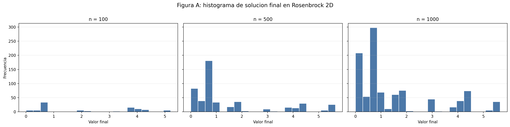
2.2.4.1.2 3D

Se observa que en Rosenbrock 2D, los histogramas muestran una fuerte concentración de frecuencias en los valores cercanos a cero (especialmente a medida que aumentan las corridas \(n = 500\) y \(n = 1000\)), lo que evidencia que el algoritmo logra converger exitosamente en repetidas ocasiones hacia la región del óptimo global, aunque persisten algunos valores dispersos debido a la dificultad de su valle parabólico. Por otro lado, en Rosenbrock 3D, se denota que la distribución se dispersa significativamente a lo largo del eje de valores finales y aparecen múltiples grupos de frecuencias separadas; esto evidencia que el incremento dimensional amplifica la sensibilidad al punto inicial, provocando que el descenso por gradiente termine con mayor frecuencia en distintas regiones o sub-óptimos locales en lugar de consolidarse en una única zona de convergencia.
2.2.4.2 Rastrigin
2.2.4.2.1 2D

2.2.4.2.2 3D

Se observa que en Rastrigin 2D, los histogramas muestran múltiples grupos de frecuencia distribuidos en diversos rangos de valores finales (con picos notables alrededor de los rangos de 0-5 y 15-20), lo que evidencia que el algoritmo es altamente sensible a la inicialización y se estanca frecuentemente en diferentes mínimos locales. Por su parte, en Rastrigin 3D, se denota que la distribución se amplía y desplaza hacia valores finales más altos, dispersando las frecuencias a lo largo de un espectro más amplio; esto evidencia que el aumento de dimensionalidad incrementa exponencialmente la cantidad de trampas multimodales, dificultando que el descenso por gradiente converja de manera consistente hacia el óptimo global.
2.2.4.3 Schwefel
2.2.4.3.1 2D
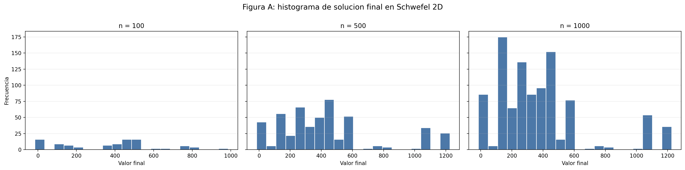
2.2.4.3.2 3D
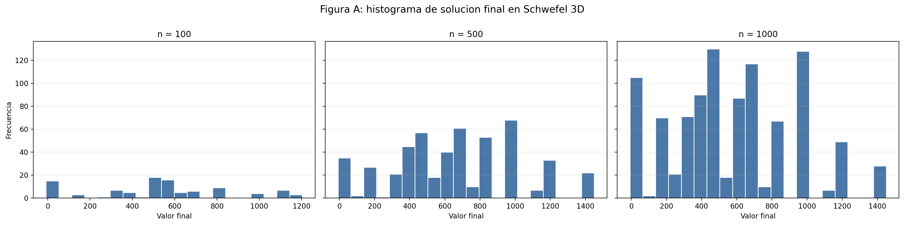
Se observa que en Schwefel 2D, los histogramas muestran una dispersión muy amplia de las frecuencias a lo largo de un gran rango de valores finales (con concentraciones intermedias y altas cifras que superan los 1000), lo que evidencia que el algoritmo es sumamente inestable y depende críticamente del punto de inicialización. Por otro lado, en Schwefel 3D, se denota que la distribución se desplaza aún más hacia la derecha y amplía su dispersión alcanzando valores finales cercanos a 1400; esto evidencia que la severa complejidad de su paisaje sinusoidal y el incremento dimensional provocan que el descenso por gradiente quede atrapado de forma masiva en mínimos locales pobres en lugar de hallar el óptimo global.
2.2.4.4 Griewank
2.2.4.4.1 2D
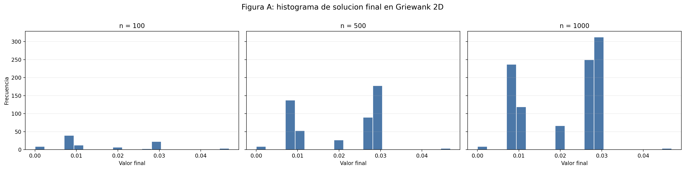
2.2.4.4.2 3D

Se observa que en Griewank 2D, los histogramas muestran una concentración de frecuencias muy estrecha y compacta en valores extremadamente cercanos a cero (con un rango limitado que apenas alcanza los 0.05), lo que evidencia que el algoritmo posee una excelente consistencia y estabilidad para converger repetidamente cerca del óptimo global. Por otro lado, en Griewank 3D, se denota que las frecuencias se concentran fuertemente en el primer tramo inferior cercano a cero (con picos muy altos en las corridas de \(n = 500\) y \(n = 1000\)), aunque con una ligera dispersión que se extiende hacia valores cercanos a 1.0; esto evidencia que, a pesar de un leve incremento en la variabilidad debido a la dimensión, la estructura global de la función permite que el descenso por gradiente mantenga una alta efectividad y robustez en la búsqueda de la solución.
2.2.4.5 Goldstein-Price
2.2.4.5.1 2D

Se observa que en Goldstein-Price 2D, los histogramas muestran una clara polarización de las frecuencias en dos extremos muy separados (con concentraciones en los valores bajos iniciales y grandes picos que rozan o alcanzan los 1000 en las corridas de \(n = 500\) y \(n = 1000\)); esto evidencia una alta inestabilidad y dependencia crítica del punto de partida, lo que demuestra que el descenso por gradiente solo acierta y converge con éxito si cae exactamente dentro de la cuenca de atracción correcta, terminando en mínimos locales deficientes o divergiendo cuando esto no ocurre.
2.2.4.6 Six-Hump Camel
2.2.4.6.1 2D
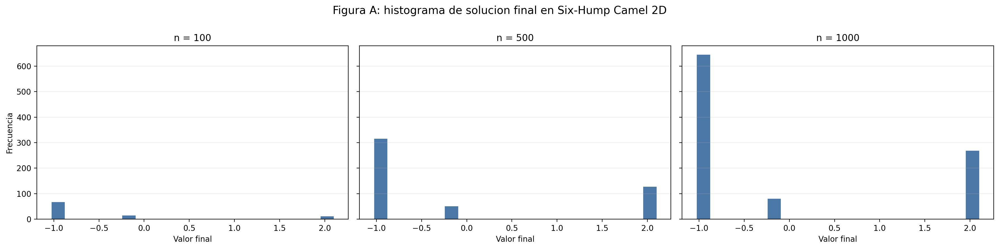
Se observa que en Six-Hump Camel 2D, los histogramas muestran una fuerte concentración de las frecuencias en el valor de -1.0 (el óptimo global) a lo largo de las distintas corridas (\(n = 100\), \(n = 500\) y \(n = 1000\)), complementada por un grupo secundario menor ubicado alrededor de 2.0; esto evidencia que el algoritmo es robusto y converge de manera mayoritaria hacia la mejor solución, a pesar de que la presencia de mínimos locales secundarios en su topología desvía ocasionalmente algunas ejecuciones hacia el otro valor final.
2.2.5 Histogramas de evaluaciones
Además de la calidad de la solución, es fundamental medir cuántas evaluaciones de la función objetivo fueron necesarias para alcanzar el resultado final. Para ello se emplean histogramas del número de evaluaciones, que permiten estudiar la eficiencia del método en cada caso.
Estos histogramas muestran si la convergencia ocurre de manera uniforme o si existen corridas mucho más costosas que otras. Una distribución concentrada en valores bajos suele indicar una convergencia más predecible y económica. En cambio, una distribución dispersa o con cola larga sugiere que algunas ejecuciones requieren muchos más pasos para estabilizarse, lo cual puede estar asociado a zonas complicadas del paisaje de optimización.
La interpretación conjunta entre histogramas de valor final e histogramas de evaluaciones es especialmente importante: un método puede converger rápido pero hacia soluciones pobres, o puede requerir más evaluaciones para acercarse mejor al mínimo global. Por eso, ambos indicadores deben analizarse en conjunto y no por separado.
2.2.5.1 Rosenbrock
2.2.5.1.1 2D
2.2.5.1.2 3D

Se observa que en Rosenbrock (tanto en 2D como en 3D), los histogramas muestran una frecuencia absoluta concentrada de manera idéntica en un único valor fijo de 1002 evaluaciones; esto evidencia un comportamiento de convergencia totalmente uniforme y predecible, indicando que el algoritmo consume siempre exactamente el mismo esfuerzo computacional para agotar o cumplir su criterio de parada sin importar el tamaño de las corridas.
2.2.5.2 Rastrigin
2.2.5.2.1 2D
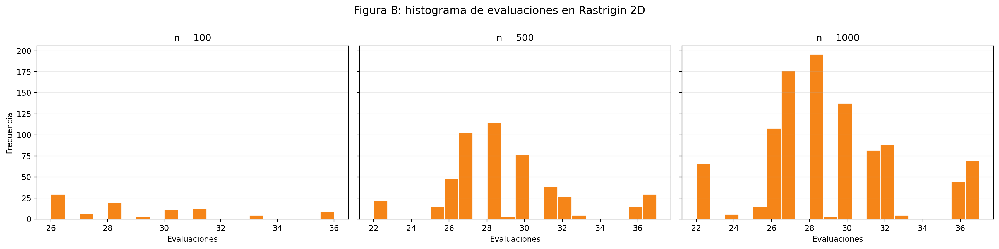
2.2.5.2.2 3D
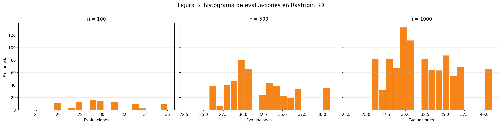
Se observa que en Rastrigin 2D y 3D, los histogramas muestran una distribución compacta y centrada de las frecuencias en un rango bajo de evaluaciones (principalmente entre 26 y 32 pasos), lo que evidencia que el algoritmo converge de manera muy rápida y predecible; sin embargo, en 3D se denota una ligera extensión hacia la derecha con frecuencias más dispersas, lo que evidencia que el aumento de dimensionalidad incrementa ligeramente el esfuerzo computacional y la variabilidad en algunas ejecuciones debido a los mínimos locales.
2.2.5.3 Schwefel
2.2.5.3.1 2D
2.2.5.3.2 3D
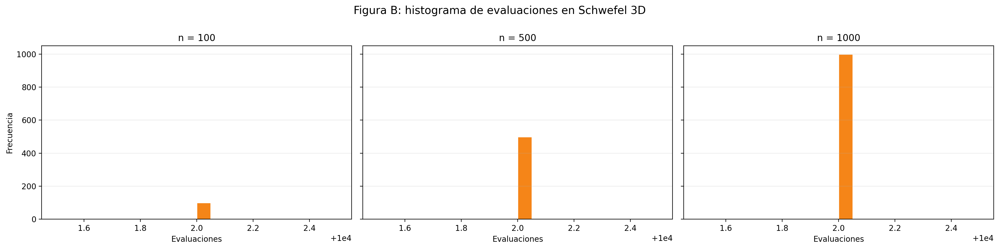
Se observa que en Schwefel (tanto en 2D como en 3D), los histogramas muestran una frecuencia absoluta concentrada de manera idéntica en un único valor fijo de aproximadamente 20000 evaluaciones (el tope máximo configurado); esto evidencia un comportamiento de convergencia totalmente uniforme donde el algoritmo agota por completo sus iteraciones en todas las corridas, reflejando que no logra un criterio de parada temprano debido a la complejidad de su búsqueda.
2.2.5.4 Griewank
2.2.5.4.1 2D

2.2.5.4.2 3D
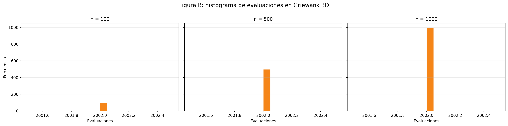
Se observa que en Griewank 2D, los histogramas muestran una distribución dispersa de las frecuencias a lo largo de un rango amplio de evaluaciones (con un grupo notable acumulándose cerca del límite superior de 2000 pasos), lo que evidencia que el algoritmo experimenta una variabilidad considerable en su esfuerzo computacional según la inicialización. Por otro lado, en Griewank 3D, se denota que la frecuencia se concentra de manera absoluta en un único valor fijo de aproximadamente 2002 evaluaciones en todas las corridas; esto evidencia que al incrementar la dimensión, el algoritmo consume siempre el tope máximo de pasos establecidos para cumplir su convergencia, volviéndose completamente uniforme en su costo computacional.
2.2.5.5 Goldstein-Price
2.2.5.5.1 2D

Se observa que en Goldstein-Price 2D, los histogramas muestran una frecuencia absoluta concentrada en un único valor fijo de 5002 evaluaciones, lo que evidencia que el algoritmo consume siempre el tope máximo de iteraciones de manera totalmente uniforme.
2.2.5.6 Six-Hump Camel
2.2.5.6.1 2D
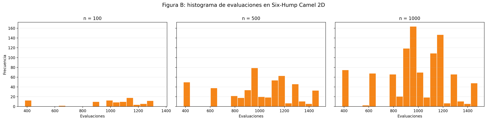
Se observa que en Six-Hump Camel 2D, los histogramas muestran una distribución dispersa y variada de las frecuencias a lo largo de un rango amplio de evaluaciones (concentrándose principalmente entre los 800 y 1300 pasos), lo que evidencia que el algoritmo experimenta un esfuerzo computacional heterogéneo y dependiente de la ruta de búsqueda inicial para alcanzar la convergencia.
2.2.6 Conclusión Parcial
En síntesis, el descenso por gradiente demostró ser un método eficiente y de bajo costo en términos de evaluaciones cuando se enfrenta a paisajes regulares (como Rosenbrock o zonas específicas de Griewank). Sin embargo, evidenció limitaciones severas en funciones altamente multimodales (Rastrigin y Schwefel) y superficies con valles complejos o dependencia crítica de la inicialización (Goldstein-Price), donde el algoritmo tiende a estancarse en mínimos locales deficientes o a consumir el tope máximo de iteraciones sin garantizar el óptimo global.
Estas limitaciones, derivadas de su naturaleza determinista y estrictamente local, justifican la transición hacia métodos heurísticos de búsqueda poblacional y estocástica, los cuales favorecen un mejor balance entre exploración y explotación del espacio de búsqueda y resultan especialmente útiles en problemas multimodales o con paisajes de optimización complejos (Talbi 2009).
2.3 Optimización con Métodos Heurísticos
Una vez analizado el descenso por gradiente, el siguiente paso consiste en estudiar métodos de optimización heurística que no dependan de información derivativa de la función objetivo. En esta parte se emplearon tres estrategias de búsqueda poblacional: algoritmo evolutivo, optimización por enjambre de partículas (PSO) y evolución diferencial. Estos métodos resultan especialmente útiles en funciones multimodales o con paisajes complejos, donde una estrategia puramente local puede quedar atrapada en mínimos no globales.
El objetivo de esta subsección es comparar la calidad de las soluciones obtenidas por estos métodos, así como su costo computacional medido en número de evaluaciones de la función objetivo. De esta manera, la discusión no se centra solo en quién alcanza el mejor valor final, sino también en qué tan robusto y eficiente resulta cada enfoque frente a funciones de distinta dificultad y dimensionalidad.
2.3.1 Metodología
Para el experimento heurístico se evaluaron las funciones Rosenbrock, Rastrigin, Schwefel y Griewank en 2D y 3D. Adicionalmente, Goldstein-Price y Six-Hump Camel se trabajaron solo en 2D, ya que en el proyecto fueron implementadas en su formulación clásica bidimensional. En todos los casos se realizaron varias corridas con semillas distintas, registrando el mejor valor encontrado, la mejor solución, el número de iteraciones y el número de evaluaciones de la función objetivo.
Los resultados consolidados de esta parte fueron generados desde el bloque heuristicos/, utilizando una implementación unificada para los tres métodos y un criterio consistente de conteo de evaluaciones. Esto permite realizar comparaciones directas entre algoritmos bajo condiciones experimentales equivalentes.
2.3.2 Parámetros de los algoritmos
La configuración general utilizada para los experimentos heurísticos se resume a continuación, separando los parámetros de cada método para facilitar su lectura e interpretación.
2.3.2.1 Algoritmo evolutivo
| Parámetro | Valor |
|---|---|
| Tamaño de población | 40 |
| Fracción de elitismo | 0.2 |
| Fracción de mutación | 0.1 |
| Máximo de iteraciones | 100 |
2.3.2.2 PSO
| Parámetro | Valor |
|---|---|
| Número de partículas | 40 |
| Peso de inercia | 0.7 |
| Peso cognitivo | 1.5 |
| Peso social | 1.5 |
| Máximo de iteraciones | 100 |
2.3.2.3 Evolución diferencial
| Parámetro | Valor |
|---|---|
| Tamaño de población | 40 |
| Factor de mutación | 0.8 |
| Tasa de cruce | 0.7 |
| Máximo de iteraciones | 100 |
2.3.3 Tablas de resumen comparativo
La tabla principal de esta subsección debe consolidar, para cada función, dimensión y método, el mejor valor promedio, el mejor valor mínimo alcanzado y el promedio de evaluaciones realizadas. Esta tabla permite comparar de manera global tanto la calidad de las soluciones como el costo computacional.
La siguiente tabla fue construida a partir de trabajo_carlos/1. optimizacion_numerica/heuristicos/datos/figuras/tabla_resumen_heuristicos.csv.
| Función | Dimensión | Mejor método | Mejor valor mínimo | Mejor valor promedio | Promedio de evaluaciones |
|---|---|---|---|---|---|
| Rosenbrock | 2 | Evolución diferencial | 0.000000 | 0.000000 | 4840.0 |
| Rosenbrock | 3 | Evolución diferencial | 0.000002 | 0.000242 | 4840.0 |
| Rastrigin | 2 | Evolución diferencial | 0.000000 | 0.000000 | 4840.0 |
| Rastrigin | 3 | Evolución diferencial | 0.000002 | 0.038206 | 4840.0 |
| Schwefel | 2 | Evolución diferencial | 0.000025 | 0.000025 | 7050.0 |
| Schwefel | 3 | Evolución diferencial | 0.000038 | 0.000038 | 7050.0 |
| Griewank | 2 | PSO | 0.000000 | 0.002583 | 7050.0 |
| Griewank | 3 | PSO | 0.000000 | 0.009003 | 7050.0 |
| Goldstein-Price | 2 | Evolución diferencial | 3.000000 | 3.000000 | 4840.0 |
| Six-Hump Camel | 2 | PSO | -1.031628 | -1.031628 | 4840.0 |
En general, la tabla resume un patrón bastante claro: Evolución diferencial es el método más sólido en la mayoría de las funciones analizadas. En Rosenbrock, Rastrigin, Schwefel y Goldstein-Price, este método alcanza los mejores valores promedio y, al mismo tiempo, mantiene un costo computacional estable, lo que sugiere una buena combinación entre precisión y robustez frente a distintos paisajes de optimización.
Por su parte, PSO sobresale en Griewank y Six-Hump Camel. En estos casos logra los mejores valores promedio, lo que indica que su dinámica de exploración y ajuste colectivo se adapta especialmente bien a superficies con múltiples mínimos, pero con una estructura más favorable. Esto muestra que no existe un único método universalmente superior, aunque sí se observa una ventaja general de Evolución diferencial en los problemas más exigentes.
También se nota que la dimensión influye de manera importante en la dificultad. Al pasar de 2D a 3D, funciones como Rosenbrock, Rastrigin, Schwefel y Griewank presentan un deterioro en el valor promedio, lo que refleja que el aumento de dimensionalidad hace más compleja la búsqueda del óptimo global. Aun así, los métodos mejor posicionados conservan un desempeño competitivo, lo que refuerza la utilidad de estos enfoques heurísticos para problemas no convexos y multimodales.
En síntesis, los resultados sugieren que Evolución diferencial es la alternativa más consistente como método general, mientras que PSO puede ser preferible en funciones específicas donde la estructura del paisaje favorece su estrategia de búsqueda.
2.3.4 Comparación gráfica de desempeño
Para evitar una presentación excesivamente fragmentada, en la parte heurística conviene resumir los resultados con unas pocas figuras comparativas de alto valor interpretativo. En lugar de repetir una gráfica por cada función y por cada método, es preferible usar figuras consolidadas que permitan identificar rápidamente tendencias generales.
2.3.5 Comparación gráfica de la mediana del valor final
2.3.5.1 Función Rosenbrock
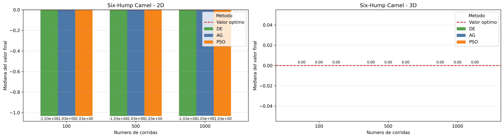
En Rosenbrock, Evolución diferencial logra los mejores resultados en 2D y 3D, con valores muy cercanos al óptimo. Al aumentar la dimensión, PSO y el Algoritmo evolutivo pierden algo de precisión.
2.3.5.2 Función Rastrigin
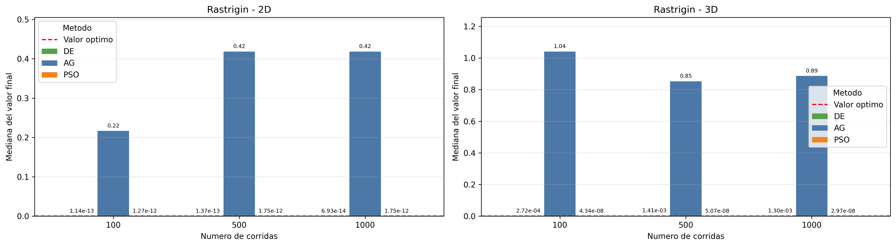
En Rastrigin, Evolución diferencial y PSO mantienen valores casi nulos en ambas dimensiones. El Algoritmo evolutivo muestra mayores dificultades, sobre todo en 3D.
2.3.5.3 Función Schwefel
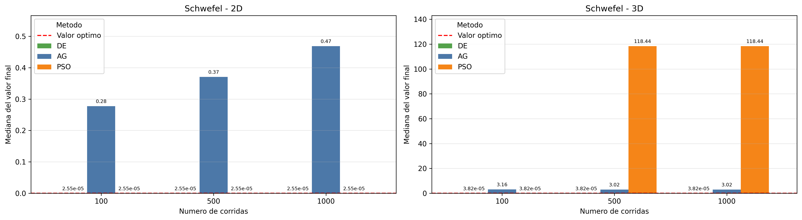
En Schwefel, Evolución diferencial es el método más estable y preciso en 2D y 3D. En cambio, PSO empeora con fuerza en 3D, mostrando la mayor sensibilidad a la dimensión.
2.3.5.4 Función Griewank
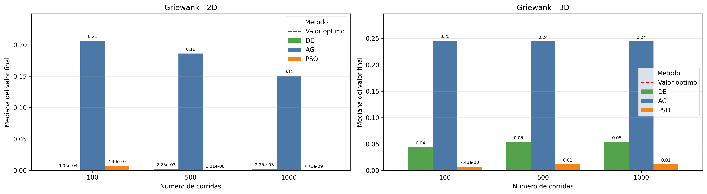
En Griewank, PSO presenta el mejor desempeño general, con valores más cercanos al óptimo en 2D y 3D. Evolución diferencial también responde bien, mientras que el Algoritmo evolutivo queda más rezagado.
2.3.5.5 Función Goldstein-Price
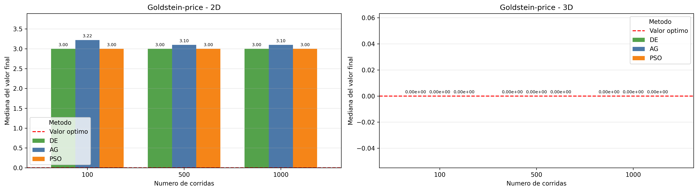
En Goldstein-Price, los tres métodos tienen resultados parecidos, aunque Evolución diferencial y PSO se mantienen más cerca del valor óptimo. El Algoritmo evolutivo presenta una precisión ligeramente menor.
2.3.5.6 Función Six-Hump Camel

En Six-Hump Camel, los tres métodos alcanzan resultados casi idénticos y muy cercanos al óptimo. Esto sugiere que la función puede resolverse con alta estabilidad sin grandes diferencias entre enfoques.
2.3.6 Convergencia por función
2.3.6.1 Función Rosenbrock
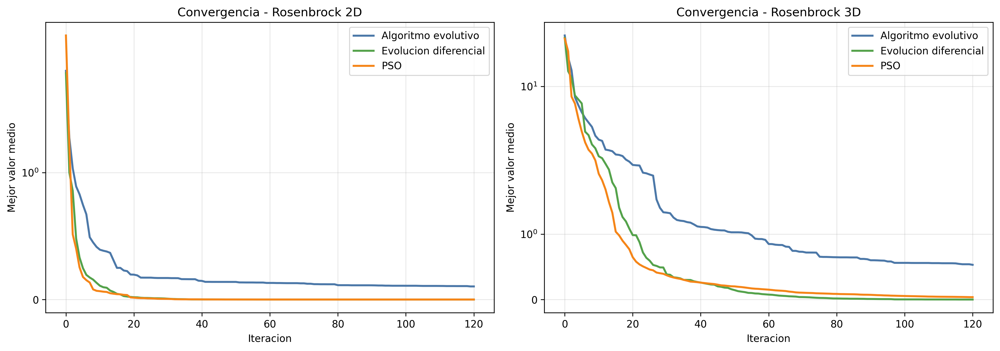
2.3.6.2 Función Schwefel
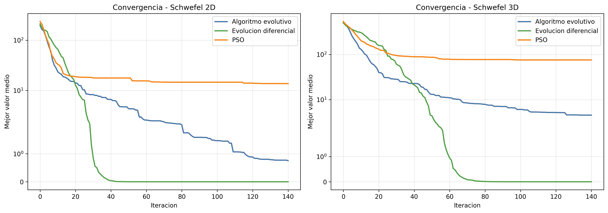
2.3.6.3 Función Rastrigin
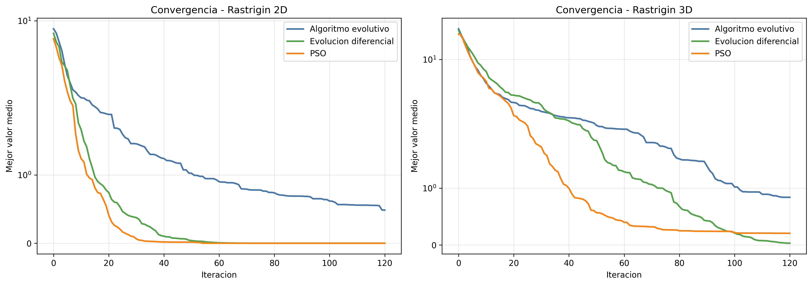
2.3.6.4 Función Griewank
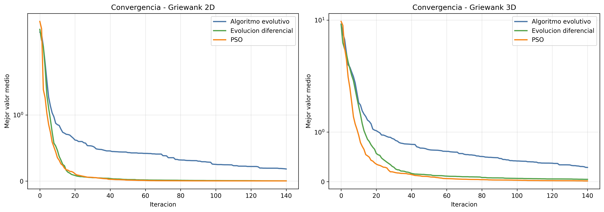
2.3.6.5 Función Goldstein-Price

2.3.6.6 Función Six-Hump Camel

En general, las curvas muestran que Evolución diferencial es el método más consistente, ya que converge con rapidez y suele terminar más cerca del óptimo en la mayoría de las funciones. PSO también presenta un muy buen desempeño, especialmente en Rastrigin, Griewank y Six-Hump Camel, donde desciende con rapidez y alcanza soluciones competitivas.
Por su parte, el Algoritmo evolutivo tiende a converger de forma más lenta y en varios casos queda más alejado del mejor valor final. En conjunto, los resultados refuerzan que Evolución diferencial y PSO ofrecen el comportamiento de convergencia más favorable dentro del estudio.
2.3.6.7 Conclusión Parcial
Los resultados obtenidos muestran que los métodos heurísticos evaluados son capaces de aproximarse con buena precisión a los óptimos de varias funciones de prueba, aunque su desempeño depende de la complejidad del paisaje y de la dimensión del problema. En general, Evolución diferencial fue el método más consistente, ya que alcanzó valores promedio de 0.000000 en Rosenbrock 2D, Rastrigin 2D y Goldstein-Price 2D, además de 0.000025 en Schwefel 2D y 0.000038 en Schwefel 3D.
Por su parte, PSO también presentó un comportamiento muy competitivo, especialmente en Griewank, donde obtuvo el mejor valor promedio con 0.002583 en 2D y 0.009003 en 3D, y en Six-Hump Camel 2D, donde igualó el mejor resultado con -1.031628. En contraste, el Algoritmo evolutivo mostró un desempeño más variable, con promedios más altos como 0.527946 en Rosenbrock 3D, 0.818432 en Rastrigin 3D y 4.713732 en Schwefel 3D.
Además, se observó que el aumento de dimensionalidad tiende a hacer más difícil la búsqueda del óptimo. Por ejemplo, en Rosenbrock el mejor promedio pasó de 0.000000 en 2D a 0.000242 en 3D, en Rastrigin de 0.000000 a 0.038206, y en Griewank de 0.002583 a 0.009003. Esto confirma que la complejidad del problema influye directamente en la estabilidad y eficacia de los métodos empleados.
En conjunto, el análisis confirma que los métodos heurísticos son una alternativa efectiva para problemas de optimización no lineal y multimodal, pero también evidencia que no existe un único enfoque universalmente superior para todos los casos. Aun así, dentro de este estudio, Evolución diferencial se perfila como la opción más robusta y equilibrada, mientras que PSO destaca en funciones específicas donde alcanza resultados iguales o incluso mejores.
2.4 Comparación final entre métodos
Esta página está pensada para comparar los métodos dentro del mismo caso, no entre funciones distintas. La comparación correcta es:
Rosenbrock 2D y 3D: comparación entre descenso por gradiente, algoritmo evolutivo, PSO y evolución diferencial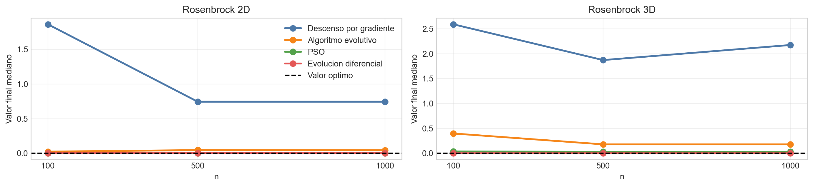
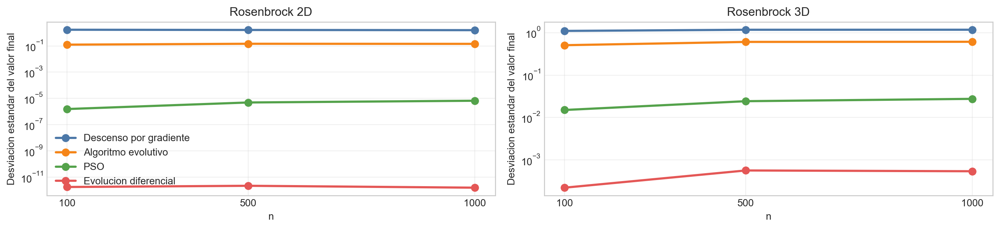
En la función Rosenbrock, PSO y, especialmente, Evolución diferencial muestran el mejor desempeño, ya que alcanzan valores finales medianos muy cercanos al óptimo tanto en 2D como en 3D y, además, presentan una variabilidad muy baja.
El Algoritmo evolutivo se ubica en un nivel intermedio: mejora con claridad frente a Descenso por gradiente, pero todavía queda algo más alejado del valor óptimo, sobre todo en 3D. En cambio, Descenso por gradiente registra los valores finales más altos y una mayor dispersión, por lo que resulta ser el método menos preciso y menos estable en esta comparación.
Rastrigin 2D y 3D: gradiente vs EA vs PSO vs DE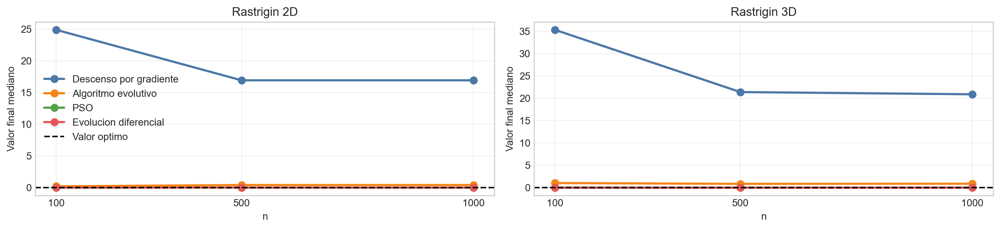
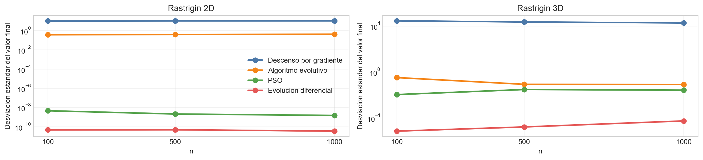
Para la función Rastrigin, la diferencia entre métodos es aún más evidente. Evolución diferencial y PSO vuelven a destacar como las alternativas más efectivas, al mantener valores finales muy próximos al óptimo y desviaciones reducidas, incluso cuando aumenta la dimensión del problema.
El Algoritmo evolutivo ofrece un comportamiento aceptable, pero sigue mostrando una brecha frente a los mejores métodos. Por su parte, Descenso por gradiente presenta los peores resultados, con valores finales claramente más altos y una variabilidad mayor, lo que indica menor capacidad para converger de forma precisa en esta función.
Schwefel 2D y 3D: gradiente vs EA vs PSO vs DE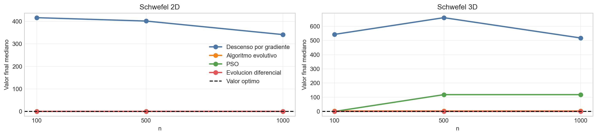
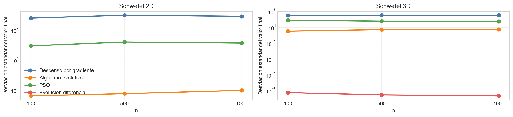
En la función Schwefel, Evolución diferencial es el método más sólido en ambas dimensiones, ya que mantiene valores finales medianos prácticamente sobre el óptimo y, además, exhibe la menor desviación entre todos los enfoques. El Algoritmo evolutivo también presenta un muy buen comportamiento, con resultados cercanos al óptimo y una variabilidad bastante baja, aunque sin alcanzar la consistencia de DE. En contraste, PSO y, sobre todo, Descenso por gradiente muestran un desempeño más débil: PSO se deteriora con claridad en 3D, mientras que Descenso por gradiente conserva los valores finales más altos y la mayor dispersión, por lo que resulta el método menos preciso y menos estable en esta comparación.
Griewank 2D y 3D: gradiente vs EA vs PSO vs DE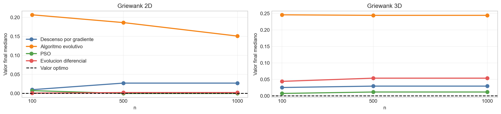
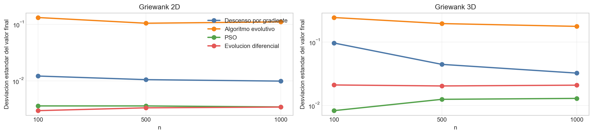
En la función Griewank se observa un comportamiento menos uniforme entre métodos que en los casos anteriores. En 2D, Evolución diferencial logra el mejor resultado, ya que se mantiene prácticamente sobre el óptimo y con la menor desviación, mientras que PSO también presenta un desempeño bastante sólido.
En 3D, el método que mejor se comporta es PSO, porque alcanza los valores medianos más bajos y conserva una variabilidad reducida; Evolución diferencial se mantiene competitivo, aunque ya no domina con la misma claridad que en 2D.
Por otro lado, el Algoritmo evolutivo es el más débil en ambas dimensiones, al registrar los valores finales más altos y la mayor dispersión, mientras que Descenso por gradiente queda en una posición intermedia.
Goldstein-Price 2D: gradiente vs EA vs PSO vs DE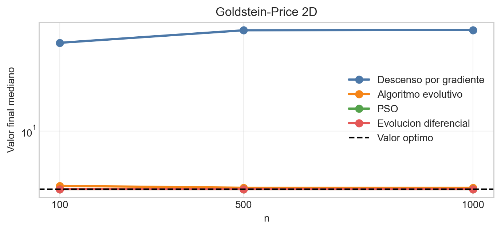
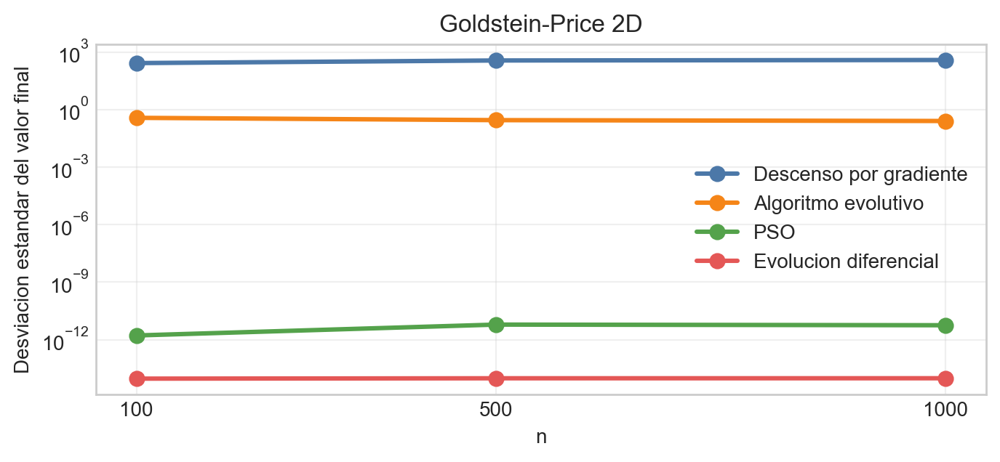
En la función Goldstein-Price 2D, PSO y Evolución diferencial muestran el mejor comportamiento, ya que alcanzan valores finales medianos prácticamente coincidentes con el óptimo y, además, presentan una variabilidad extremadamente baja. El Algoritmo evolutivo también logra aproximarse bien al valor óptimo, aunque con una dispersión mayor que estos dos métodos. En contraste, Descenso por gradiente es claramente el más débil, porque se mantiene muy alejado del óptimo y exhibe la mayor desviación, lo que refleja menor precisión y menor estabilidad.
Six-Hump Camel 2D: gradiente vs EA vs PSO vs DE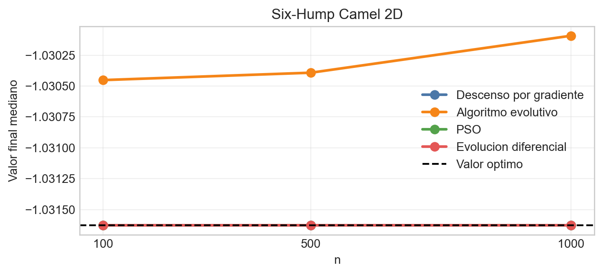

En la función Six-Hump Camel 2D, PSO y Evolución diferencial son los métodos más precisos, ya que se mantienen prácticamente sobre el valor óptimo y presentan una dispersión extremadamente baja. El Algoritmo evolutivo también logra resultados cercanos, aunque sus valores medianos quedan ligeramente por encima del óptimo y muestran una variabilidad mayor.
Por su parte, Descenso por gradiente es el enfoque menos estable, al registrar con diferencia la desviación más alta entre todos los métodos comparados.
2.4.1 Tabla comparativa global
| Caso | Mejor método en valor final o distancia al óptimo | Mejor método en evaluaciones |
|---|---|---|
| Goldstein-Price 2D | Evolución diferencial | Evolución diferencial |
| Griewank 2D | PSO | Descenso por gradiente |
| Griewank 3D | PSO | Descenso por gradiente |
| Rastrigin 2D | Evolución diferencial | Descenso por gradiente |
| Rastrigin 3D | Evolución diferencial | Descenso por gradiente |
| Rosenbrock 2D | Evolución diferencial | Descenso por gradiente |
| Rosenbrock 3D | Evolución diferencial | Descenso por gradiente |
| Schwefel 2D | Evolución diferencial | Evolución diferencial |
| Schwefel 3D | Evolución diferencial | Evolución diferencial |
| Six-Hump Camel 2D | PSO | Descenso por gradiente |
2.4.2 Conteo global de victorias
Aquí se presenta un cierre simple contando cuántas veces ganó cada método.
| Método | Veces que ganó en calidad | Veces que ganó en evaluaciones |
|---|---|---|
| Gradiente | 0 | 7 |
| EA | 0 | 0 |
| PSO | 3 | 0 |
| DE | 7 | 3 |
2.4.3 Conclusiones
2.4.3.1 Conclusión 1: Mejor calidad de solución en los métodos heurísticos
En términos de calidad de solución, los métodos heurísticos dominaron la comparación: ganaron en los 10 de 10 casos analizados. Dentro de ese grupo, Evolución diferencial obtuvo el mejor resultado en 7 casos y PSO en 3, mientras que Algoritmo evolutivo y Descenso por gradiente no lideraron ningún caso en esta métrica.
2.4.3.2 Conclusión 2: Mayor eficiencia computacional del descenso por gradiente
En costo computacional, medido por el número de evaluaciones de la función objetivo, Descenso por gradiente fue el método más eficiente en 7 de 10 casos. Los 3 casos restantes fueron ganados por Evolución diferencial, lo que muestra que gradiente suele ser más barato, aunque no necesariamente el más preciso.
2.4.3.3 Conclusión 3: Aporte comparado entre descenso por gradiente y métodos heurísticos
Los resultados muestran un patrón claro: los métodos heurísticos aportaron mejor precisión global, mientras que Descenso por gradiente aportó mayor rapidez en la mayoría de los casos. Además, Evolución diferencial fue el único método que logró combinar ambas ventajas en algunos problemas, siendo el mejor tanto en calidad como en evaluaciones en 3 casos: Goldstein-Price 2D, Schwefel 2D y Schwefel 3D.
2.4.4 Animación representativa del método ganador
Como cierre visual de la comparación numérica, se incluye una animación de evolución diferencial sobre la función Rastrigin 2D. Este caso se eligió porque DE fue el método con mejor desempeño global en la comparación final y porque Rastrigin presenta una superficie altamente multimodal, con muchos mínimos locales, lo que permite visualizar con claridad la capacidad de exploración del algoritmo.
La animación resume de manera intuitiva por qué los métodos heurísticos, y en particular la evolución diferencial, pueden ofrecer ventajas frente a un método local cuando el paisaje de optimización es complejo, ya que fueron diseñados para la optimización global en espacios continuos y favorecen una exploración más robusta del espacio de búsqueda (Storn and Price 1997).
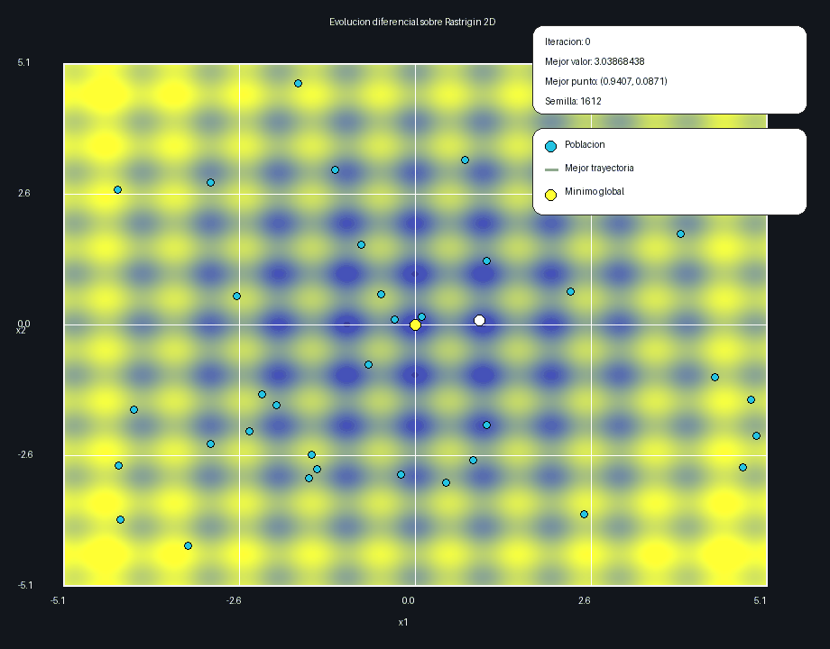
2.4.5 Fuente de datos
Esta comparación debe salir de:
3 Parte 2: Optimización Combinatoria (TSP - 96 Departamentos de Francia)
3.1 3.1 Descripción del problema
En la segunda parte del trabajo se aborda una variante del Problema del Viajante (TSP) aplicada al recorrido de las 96 capitales departamentales de Francia metropolitana. El objetivo consiste en encontrar un orden de visita para todas las ciudades tal que se minimice el costo total del recorrido, cumpliendo la condición clásica del TSP: cada ciudad debe visitarse exactamente una vez y, al finalizar, se debe completar el circuito regresando al punto de partida o cerrando la gira definida para la evaluación. Debido a que el número de rutas posibles crece de forma factorial con respecto al número de ciudades, se trata de un problema combinatorio de muy alta complejidad, para el cual resulta poco práctico aplicar métodos exactos en tiempos razonables (Applegate et al. 2006).
En este contexto, cada solución candidata puede representarse como una permutación de las 96 ciudades, donde el orden de los elementos define la ruta seguida por el vendedor. Sin embargo, la evaluación de esa ruta no se realiza directamente sobre el grafo parcial original, sino sobre una matriz completa de costos mínimos entre todas las parejas de ciudades. De esta manera, el problema no se limita a encontrar la ruta más corta en kilómetros, sino la ruta de menor costo total, incorporando factores operativos más cercanos a una situación real de desplazamiento y dejando la instancia lista para ser tratada como un TSP clásico.
La función objetivo utilizada en la implementación combina directamente tres componentes por tramo: peajes, gasolina y costo del tiempo del vendedor. En particular, el componente de combustible no se estima como distancia por costo por kilómetro, sino que se toma directamente de la columna gasolina(euros) recuperada del dataset. A esto se suma el costo temporal del vendedor, calculado a partir del tiempo de viaje y una tarifa fija de 12.02 EUR/h. En forma compacta, la expresión empleada es:
\[ \text{Costo total} = \text{peajes(euros)} + \text{gasolina(euros)} + \left(\frac{\text{tiempo(min)}}{60}\right)\times 12.02 \]
Bajo esta formulación, el costo total de un tour se obtiene acumulando ese valor sobre los tramos recorridos en la ruta. Esto hace que el problema sea especialmente adecuado para el uso de metaheurísticas, ya que el reto consiste en explorar un espacio enorme de posibles recorridos y encontrar una secuencia que balancee de manera eficiente tiempo y costo monetario en una red vial real.
3.2 3.2 Construcción y preprocesamiento de datos
La construcción del conjunto de datos para esta parte del trabajo se realizó en varias etapas. Primero, se extrajeron las coordenadas geográficas de las ciudades desde el sitio web GeoKeo, tomando como referencia las capitales departamentales de Francia. A partir de estas coordenadas se generó una primera estructura de conexiones entre ciudades cercanas, utilizada como base para construir un grafo inicial de rutas, el cual fue exportado a un archivo CSV para facilitar su revisión posterior.
Posteriormente, este grafo fue ajustado y validado manualmente con apoyo de visualizaciones sobre mapa, con el fin de identificar conexiones plausibles dentro de la red y corregir aquellas que no representaban trayectos razonables. Esta etapa fue importante porque la cercanía geográfica por sí sola no garantiza que dos ciudades estén conectadas por una ruta real o conveniente dentro de la red vial.
Una vez consolidada esta red base, se realizó el proceso de web scraping sobre el sitio VINCI Autoroutes, utilizando las rutas previamente definidas para consultar y completar información real de los trayectos. En particular, para cada conexión se obtuvo la distancia recorrida, el tiempo estimado de viaje y el valor de los peajes. Para mantener consistencia en la recolección de la información, en VINCI Autoroutes se utilizó la categoría Clase 1 - Vehículos ligeros, correspondiente a automóviles particulares y vehículos de uso ligero (VINCI Autoroutes 2026). Estos datos sirvieron como base para estructurar el conjunto final utilizado en la optimización combinatoria.
Como paso previo a la optimización, se calculó el costo mínimo de viaje entre cada par de ciudades a partir de la red de conexiones disponibles. Para ello se aplicó el algoritmo de Dijkstra, un método clásico para encontrar caminos de costo mínimo en grafos (Dijkstra 1959). De esta forma se construyó una matriz completa de costos 96 x 96, que fue la utilizada posteriormente por ACO y GA. Sobre esa matriz se verificó que la estructura fuera cuadrada, que la diagonal quedara en cero y que no existieran valores infinitos fuera de la diagonal, asegurando así una representación consistente del problema.
3.3 3.3 Algoritmos utilizados
Para resolver este problema se emplearon dos metaheurísticas clásicas para optimización combinatoria: Colonia de Hormigas (ACO) y Algoritmos Genéticos (GA). La elección de estos métodos responde a que ambos están diseñados para explorar espacios de búsqueda discretos muy grandes y han mostrado buen desempeño en variantes del TSP. Además, permiten balancear de manera flexible los procesos de exploración y explotación, lo cual es importante cuando se busca escapar de soluciones pobres sin perder la capacidad de refinar rutas prometedoras (Talbi 2009).
3.3.0.1 Colonia de Hormigas (ACO)
El algoritmo de colonia de hormigas construye soluciones de manera progresiva, simulando el comportamiento colectivo de hormigas que depositan feromonas sobre los caminos recorridos. En cada iteración, varias hormigas generan rutas completas entre las ciudades, eligiendo el siguiente nodo con base en una combinación entre la feromona acumulada y una heurística local asociada al inverso del costo entre ciudades. Con el paso de las iteraciones, las rutas de menor costo reciben mayor refuerzo y tienden a guiar la búsqueda hacia regiones más prometedoras del espacio de soluciones.
En la implementación utilizada se fijaron los siguientes parámetros:
- número de hormigas:
40 - número de iteraciones:
250 - importancia de la feromona (
alpha):1.0 - importancia de la heurística (
beta):3.0 - tasa de evaporación:
0.35 - factor de intensificación:
2.0 - peso elitista para reforzar la mejor ruta global:
2.0 - semilla aleatoria:
42
3.3.0.2 Experimentación con distintas configuraciones
- Experimento cambiando
número de hormigas:

La gráfica muestra que todas las configuraciones mejoran con rapidez en las primeras iteraciones y luego se estabilizan, así que 250 iteraciones parecen más de las necesarias para este experimento. La mejor configuración fue la de 80 hormigas, ya que alcanzó el menor costo final (aprox. 4100), mientras que 20 hormigas obtuvo el peor resultado. En general, aumentar el número de hormigas parece mejorar la exploración y permitir mejores soluciones, aunque la mejora no es totalmente uniforme entre todas las configuraciones. De todos modos, como aquí se usa una sola semilla, sería recomendable repetir el experimento con varias corridas y también comparar contra tiempo de ejecución, porque más hormigas implican mayor costo computacional.
- Experimento cambiando
beta:

Aquí se ve más claro el efecto de beta: cuando beta es bajo (3.0), el algoritmo converge más lento y además termina con el peor costo final. En cambio, con valores más altos, la convergencia mejora bastante y se alcanzan soluciones de mejor calidad.
Las mejores configuraciones parecen ser beta = 5.0 y beta = 7.0, que llegan a los costos más bajos (cerca de 4100), mientras que beta = 6.0 y beta = 4.0 quedan en un punto intermedio. En general, esto sugiere que dar más peso a la heurística ayuda, aunque el efecto no es totalmente lineal, porque no todos los valores altos de beta rinden igual.
Estos valores permiten dar mayor peso a la información heurística del costo entre ciudades, sin eliminar la influencia del aprendizaje colectivo por feromonas. La evaporación evita que la búsqueda se estanque demasiado pronto en rutas subóptimas, mientras que el refuerzo elitista ayuda a conservar y explotar la mejor solución global encontrada hasta cada iteración.
- Experimento cambiando
evaporation rate:

Aquí se ve que la tasa de evaporación sí cambia bastante el comportamiento del ACO. Con 0.25 se obtiene el mejor costo final (aprox. 4060), aunque no es la curva que baja más rápido al inicio. En cambio, con 0.55 la mejora inicial es muy rápida, pero se estanca pronto y termina con el peor resultado final.
En general, esto sugiere que una evaporación intermedia funciona mejor: si es muy baja (0.15), el algoritmo tarda más en adaptarse; si es muy alta (0.55), pierde demasiado rápido la información acumulada. Por eso, en este experimento, 0.25 parece el mejor equilibrio entre exploración y explotación.
3.3.0.3 Configuración final de parámetros para el modelo de Colonia de Hormigas
De acuerdo con los experimentos realizados, se estableció la siguiente configuración para el algoritmo de colonia de hormigas (ACO), buscando un equilibrio entre la exploración del espacio de soluciones y la explotación de las mejores rutas encontradas:
- número de hormigas:
150 - número de iteraciones:
100 - importancia de la feromona (
alpha):1.0 - importancia de la heurística (
beta):5.0 - tasa de evaporación:
0.25 - factor de intensificación:
2.0 - peso elitista para reforzar la mejor ruta global:
2.0 - semilla aleatoria:
no especificada
3.3.1 Algoritmos Genéticos (GA)
El algoritmo genético aborda el problema manteniendo una población de rutas candidatas que evoluciona a lo largo de varias generaciones. Cada individuo representa un recorrido completo por las ciudades, y su aptitud se evalúa con el costo total de la ruta. A partir de esta evaluación, se seleccionan las mejores soluciones para producir descendencia mediante operadores de cruce y mutación. De este modo, el método combina información de rutas de buena calidad y genera nuevas alternativas que pueden mejorar progresivamente el resultado obtenido.
En este trabajo, el GA se implementó con una estrategia de selección por torneo, cruce ordenado y mutación por intercambio de posiciones dentro de la ruta. Además, se permitió inyectar como semilla inicial la mejor ruta producida por ACO, con el fin de aprovechar una buena solución de partida y refinarla en una fase evolutiva posterior.
Los parámetros iniciales usados fueron:
- tamaño de población:
180 - número de generaciones:
350 - tasa de mutación:
0.12 - tasa de cruce:
0.9 - número de individuos elitistas preservados por generación:
12 - tamaño del torneo de selección:
5 - uso de semilla inicial proveniente de ACO:
True - semilla aleatoria:
42
La justificación de esta configuración es que una población relativamente amplia favorece la diversidad de soluciones, mientras que una tasa de cruce alta promueve la recombinación de rutas prometedoras. La mutación moderada introduce variación sin destruir excesivamente las estructuras útiles encontradas, y el elitismo garantiza que las mejores soluciones no se pierdan entre generaciones.
3.3.1.1 Experimentación con distintas configuraciones
- Experimento cambiando
tasa de mutación:

Aquí se ve que todas las tasas de mutación terminan llegando prácticamente al mismo costo final (cerca de 3975), así que en este experimento la diferencia no está tanto en la calidad final sino en la velocidad de convergencia. La más lenta es mutation_rate = 0.12, mientras que 0.24 y 0.28 encuentran mejoras antes.
En general, esto sugiere que una mutación moderadamente alta ayuda a acelerar la búsqueda sin perjudicar el resultado final. Si tuvieras que escoger una opción balanceada, mutation_rate = 0.24 se ve como una muy buena candidata, porque converge rápido sin irse al valor más extremo.
- Experimento cambiando
tamaño de población:

Aquí se ve que tamaños de población más grandes convergen más rápido: 340 y 300 encuentran mejoras antes, mientras que 180 es claramente la más lenta. Sin embargo, todas terminan llegando prácticamente al mismo costo final (cerca de 3975), así que la diferencia principal está en la rapidez, no en la calidad final.
Eso sugiere que aumentar population_size ayuda a acelerar la búsqueda, pero con rendimientos decrecientes. Como además una población más grande cuesta más por generación, no necesariamente conviene irse al valor máximo. Si buscas una opción balanceada, population_size = 260 o 300 se ven como candidatas razonables.
- Experimento cambiando
uso de semilla inicial proveniente de ACO:

Aquí la diferencia es muy marcada: usar ACO seed hace que el GA arranque desde un costo mucho mejor, cerca de 4000, mientras que sin ACO seed empieza alrededor de 19400 y, aunque mejora de forma sostenida, después de 200 generaciones todavía queda muy por encima.
Esto sugiere que inyectar la solución de ACO es altamente beneficioso, porque acelera muchísimo la convergencia y además lleva al algoritmo a una región de soluciones mucho mejores desde el inicio. De hecho, con ACO seed casi no hay mejoras adicionales, lo que indica que ACO ya entrega una solución inicial muy fuerte y el GA solo la refina ligeramente.
3.4 Configuración final de parámetros para el algoritmo genético
De acuerdo con los experimentos realizados, se estableció la siguiente configuración para el algoritmo genético (GA), buscando un equilibrio entre diversidad poblacional, intensidad de búsqueda y preservación de las mejores soluciones encontradas:
- tamaño de población:
300 - número de generaciones:
200 - tasa de mutación:
0.24 - tasa de cruce:
0.9 - número de individuos elitistas preservados por generación:
12 - tamaño del torneo de selección:
5 - uso de semilla inicial proveniente de ACO:
True - semilla aleatoria:
42
3.5 3.4 Resultados
Los experimentos realizados sobre la instancia de las 96 capitales departamentales muestran que ambos métodos fueron capaces de producir recorridos válidos y de costo competitivo. Sin embargo, el mejor resultado final fue alcanzado por el algoritmo genético (GA), que logró refinar la solución inicial y obtener un costo total inferior al conseguido por la colonia de hormigas.
La comparación final entre métodos puede resumirse en la siguiente tabla:
| Método | Mejor costo del tour (EUR) | Diferencia frente al mejor (EUR) | Iteraciones / generaciones | Tamaño de búsqueda |
|---|---|---|---|---|
| GA | 3975.266333 | 0.000000 | 350 | 300 |
| ACO | 4022.039333 | 46.773000 | 250 | 150 |
El mejor costo encontrado fue de 3975.266333 euros, calculado con la función de costo definida a partir de peajes, combustible y tiempo del vendedor. Este resultado se obtuvo usando como vehículo de referencia un Renault Clio, con combustible tipo gasolina, y una tarifa del vendedor de 12.02 euros por hora, de acuerdo con la formulación del modelo. Además, aunque el tour TSP recorre las 96 capitales, su expansión sobre el grafo real produce un recorrido de 100 saltos reales, lo que permite interpretar la solución final de manera más fiel a la red de conexiones utilizada.
En cuanto a la comparación entre métodos, ACO alcanzó un mejor costo de 4022.039333 euros, mientras que GA obtuvo 3975.266333 euros. En otras palabras, GA mejoró a ACO en 46.773000 euros, equivalente a una mejora relativa de 1.1629 %. Esta diferencia es menor que en versiones preliminares de los experimentos, lo que indica que ambos métodos terminaron convergiendo a soluciones de alta calidad y muy cercanas entre sí.
Desde el punto de vista de la convergencia, esta dinámica resulta especialmente interesante. ACO encuentra con rapidez una solución base competitiva para una instancia grande del TSP, mientras que GA, apoyado en una población más amplia y en la inyección de la mejor solución previa de ACO, consigue seguir refinando la ruta hasta obtener la mejor solución final. En este sentido, los resultados no solo muestran competencia entre ambos enfoques, sino también una complementariedad efectiva dentro del flujo de optimización.
La mejor ruta encontrada puede resumirse por tramos geográficos de la siguiente forma:
- corredor este y noreste:
Bourg-en-Bresse -> Lons-le-Saunier -> Besançon -> Vesoul -> Belfort -> Colmar -> Strasbourg -> Metz -> Nancy -> Épinal -> Chaumont -> Dijon -> Auxerre -> Troyes -> Bar-le-Duc -> Châlons-en-Champagne -> Charleville-Mézières -> Laon - norte y eje parisino:
Lille -> Arras -> Amiens -> Beauvais -> Cergy -> Nanterre -> Bobigny -> Créteil -> Paris -> Versailles -> Évry-Courcouronnes -> Melun - centro-oeste y fachada atlántica:
Orléans -> Blois -> Tours -> Poitiers -> Niort -> La Rochelle -> La Roche-sur-Yon -> Nantes -> Vannes -> Quimper -> Saint-Brieuc -> Rennes -> Laval -> Angers -> Le Mans -> Alençon -> Caen -> Saint-Lô -> Rouen -> Évreux -> Chartres -> Bourges -> Châteauroux -> Guéret -> Limoges -> Tulle -> Aurillac - suroccidente y arco mediterráneo:
Rodez -> Albi -> Montauban -> Cahors -> Agen -> Périgueux -> Angoulême -> Bordeaux -> Mont-de-Marsan -> Pau -> Tarbes -> Auch -> Toulouse -> Foix -> Carcassonne -> Perpignan -> Montpellier -> Nîmes -> Avignon -> Marseille -> Toulon -> Bastia -> Ajaccio -> Nice -> Digne-les-Bains -> Gap - retorno alpino y centro-este:
Grenoble -> Valence -> Privas -> Mende -> Le Puy-en-Velay -> Saint-Étienne -> Clermont-Ferrand -> Moulins -> Nevers -> Mâcon -> Lyon -> Chambéry -> Annecy -> Bourg-en-Bresse
En términos cualitativos, los resultados muestran una dinámica complementaria entre ambos enfoques. ACO aporta una exploración guiada por información local y memoria colectiva, lo que permite encontrar rápidamente rutas razonables en un espacio de búsqueda muy grande. Por su parte, GA aprovecha esa base inicial y la mejora mediante operadores evolutivos, conservando buenas estructuras parciales y corrigiendo tramos menos eficientes del recorrido. Por esta razón, dentro de los experimentos realizados, GA puede considerarse el método con mejor desempeño final para esta instancia del problema, aunque la brecha observada frente a ACO sugiere que ambos métodos fueron altamente competitivos.
3.6 3.5 Visualización
La visualización final se realiza sobre el mapa de Francia, mostrando el recorrido ganador obtenido por el algoritmo genético. El GIF permite observar la progresión espacial del tour, mientras que la curva de convergencia muestra cómo el costo va disminuyendo a medida que avanzan las generaciones del método ganador.
3.6.1 Comparación visual de costos
3.6.2 GIF del mejor recorrido en Francia
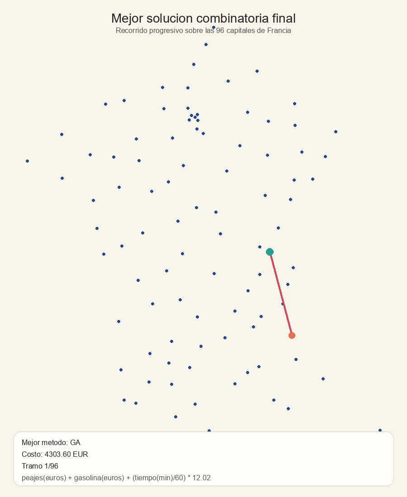
3.6.3 Curva de convergencia del método ganador
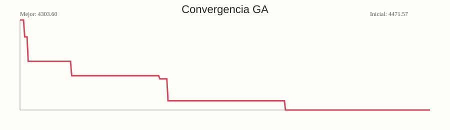
Como apoyo adicional, también se dispone de una visualización estática del tour ganador, útil para inspeccionar la forma general del recorrido sin necesidad de reproducir la animación.
4 Conclusiones y Aprendizajes
4.1 Conclusiones generales
El trabajo permitió comparar dos familias de problemas de optimización con naturalezas muy distintas y dejó una conclusión central: la elección del método depende directamente de la estructura del problema. En la parte de optimización numérica, el descenso por gradiente mostró un buen comportamiento cuando la geometría de la función favorecía el uso de información local, como ocurrió especialmente en Griewank, Six-Hump Camel y, en menor medida, Rosenbrock 2D. Sin embargo, en funciones altamente multimodales o con paisajes más irregulares, como Rastrigin, Schwefel y Goldstein-Price, su desempeño se deterioró por la sensibilidad al punto inicial y la facilidad con la que puede quedar atrapado en mínimos locales.
La comparación final de la parte numérica confirmó que los métodos heurísticos ofrecieron la mejor calidad de solución en todos los casos analizados. Dentro de ellos, Evolución diferencial fue el método más robusto a nivel global, con el mejor resultado en 7 de 10 casos, mientras que PSO destacó especialmente en Griewank y Six-Hump Camel. Aun así, el descenso por gradiente conservó una ventaja importante en eficiencia computacional, ya que fue el método con menor número de evaluaciones en 7 de 10 casos. Esto muestra un patrón claro: los métodos locales pueden ser más baratos, pero los heurísticos y metaheurísticos son mucho más sólidos cuando la dificultad del paisaje aumenta.
En la parte de optimización combinatoria, el TSP sobre las 96 capitales departamentales de Francia evidenció que, en espacios discretos de gran tamaño, los enfoques exactos dejan de ser prácticos y las metaheurísticas se convierten en la alternativa más razonable. Tanto ACO como GA encontraron recorridos competitivos, pero el algoritmo genético alcanzó el mejor costo final con 3975.266333 euros, superando a ACO, que obtuvo 4022.039333 euros. La mejora fue de 46.773000 euros, equivalente a 1.1629 %, lo que confirma que ambos métodos fueron competitivos, pero que GA tuvo una mayor capacidad de refinamiento sobre la solución final.
Un hallazgo especialmente valioso fue la complementariedad entre métodos. En la parte combinatoria, ACO mostró una muy buena capacidad para construir rápidamente una solución inicial de alta calidad, mientras que GA resultó más fuerte en la fase de mejora fina. Esta lógica de exploración seguida de refinamiento resume uno de los aprendizajes más importantes del proyecto: en problemas complejos, combinar estrategias puede ser más efectivo que depender de un único enfoque desde el inicio.
4.2 Aprendizajes metodológicos
Otro resultado transversal del trabajo es que el éxito de la optimización no depende solo del algoritmo, sino también de cómo se formula el problema. En la parte combinatoria, la construcción del grafo, el web scraping de trayectos reales y la generación de una matriz completa de costos mínimos mediante Dijkstra fueron pasos tan importantes como la elección de ACO o GA. De forma análoga, en la parte numérica, la interpretación de la geometría de cada función fue clave para entender por qué algunos métodos convergían con estabilidad y otros no.
En conjunto, el proyecto confirma que no existe un método universalmente superior para todos los escenarios. Los métodos clásicos, como el descenso por gradiente, son apropiados cuando la función es diferenciable, el paisaje es relativamente favorable y se busca una solución rápida con bajo costo computacional. En cambio, los métodos heurísticos y metaheurísticos son preferibles cuando el problema es multimodal, la dimensión crece, el espacio de búsqueda es discreto o la información local ya no basta para orientar la búsqueda.
Como conclusión final, el trabajo muestra que optimizar no consiste en aplicar siempre el mismo algoritmo, sino en seleccionar o combinar herramientas según la dificultad, la representación y los objetivos del problema. Esa fue la lección más importante tanto en la parte numérica como en la combinatoria: la calidad de la solución depende de la correspondencia entre el método elegido y la naturaleza real del problema que se quiere resolver.
5 Parte 4: Uso de Inteligencia Artificial en el Proyecto
5.1 4.1 Prompts principales utilizados
Los prompts reportados en esta seccion son una reconstruccion fiel de los usos principales que tuvo la IA durante el proyecto. No buscan ser una transcripcion literal de cada chat, sino resumir de forma clara las solicitudes que realmente influyeron en la implementacion, el analisis de resultados y la presentacion final del trabajo.
5.1.1 Prompt 1: diseno de experimentos para ACO y GA
Estoy comparando colonia de hormigas y algoritmo genetico para el TSP de las capitales departamentales de Francia. Ayudame a decidir que hiperparametros vale la pena experimentar en cada metodo y a escribir el codigo para correr esos barridos, guardar resultados y graficar la convergencia.Impacto en el resultado final. Este tipo de prompt permitio estructurar de manera mas rapida los experimentos de mutation_rate, population_size e inject_aco_seed en GA, y de ants, beta y evaporation_rate en ACO. Gracias a ello se pudieron comparar configuraciones reales en vez de dejar la seleccion de parametros a prueba y error informal.
5.1.2 Prompt 2: interpretacion de curvas y seleccion de configuracion final
Ya tengo las graficas y tablas de los experimentos de ACO y GA. Ayudame a interpretarlas y a escoger una configuracion balanceada, explicando que parametros mejoran el costo final, cuales aceleran la convergencia y cuales solo aumentan el costo computacional.Impacto en el resultado final. La IA se uso como apoyo para leer las curvas de convergencia y justificar mejor la eleccion final de configuraciones. En particular, ayudo a identificar el efecto positivo de inject_aco_seed, el papel de mutation_rate en la velocidad de refinamiento de GA y el compromiso entre calidad y costo computacional en ACO.
5.1.3 Prompt 3: visualizacion de la mejor ruta sobre el mapa de Francia
Quiero mostrar la mejor ruta final sobre un mapa de Francia dentro del notebook y no solo como un SVG estilizado. Ayudame a construir una visualizacion con folium o plotly, exportarla para el reporte y dejarla lista para incrustarla junto con la curva de convergencia.Impacto en el resultado final. Este prompt mejoro de forma directa la calidad de la presentacion. La mejor solucion ya no quedo solo como una polilinea abstracta, sino como una ruta visible sobre un mapa, lo que hace mucho mas clara la interpretacion geografica del recorrido final y fortalece la calidad del reporte.
5.1.4 Prompt 4: integracion de tablas, figuras y texto en el reporte tecnico
Ayudame a convertir los resultados de los notebooks en una seccion de reporte tecnico en Quarto. Quiero una tabla comparativa final entre metodos, una explicacion breve de la convergencia y una redaccion clara de los hallazgos mas importantes.Impacto en el resultado final. La IA ayudo a pasar de resultados dispersos en notebooks a una narrativa tecnica mas ordenada. Esto facilito integrar tablas, figuras y conclusiones en un formato consistente para el informe final, especialmente en la comparacion entre metodos y en la lectura de la convergencia.
5.1.5 Prompt 5: organizacion e interpretacion de resultados en optimizacion numerica
Necesito resumir los resultados de descenso por gradiente y de los metodos heuristicos en tablas y figuras comparables. Ayudame a insertar las tablas reales, escoger visualizaciones utiles e interpretar que se observa en terminos de calidad de solucion, estabilidad y numero de evaluaciones.Impacto en el resultado final. Este tipo de prompt sirvio para mejorar la lectura comparativa en la parte numerica. La IA ayudo a seleccionar que figuras eran mas utiles, como presentar los histogramas y como traducir los resultados cuantitativos en una discusion mas clara sobre robustez, multimodalidad y costo computacional.
5.1.6 Prompt 6: redaccion de introducciones, metodologia y cierre
Ayudame a redactar una introduccion breve, la metodologia y las conclusiones de un reporte academico sobre optimizacion numerica y combinatoria, manteniendo un tono tecnico y conectando bien los resultados con la discusion final.Impacto en el resultado final. La IA se uso como apoyo de escritura tecnica para ordenar el documento y reducir tiempo de redaccion. Esto no sustituyo el analisis propio, pero si ayudo a que el informe final tuviera una estructura mas coherente y una mejor transicion entre problema, metodologia, resultados y conclusiones.
5.2 4.2 Impacto global de la IA en el proyecto
En conjunto, la IA tuvo cuatro aportes principales dentro del trabajo. Primero, acelero la implementacion y depuracion de codigo para experimentos y visualizaciones. Segundo, ayudo a disenar mejor los barridos de parametros y a interpretar las curvas de convergencia, lo que tuvo impacto directo en la seleccion de configuraciones para ACO y GA. Tercero, mejoro la presentacion de resultados, especialmente en la ruta final sobre el mapa y en la organizacion de tablas y figuras. Cuarto, sirvio como apoyo para estructurar el reporte tecnico y redactar secciones de forma mas clara.
Por tanto, el uso de IA no consistio en delegar automaticamente la solucion del trabajo, sino en utilizarla como herramienta de apoyo para programacion, analisis y escritura tecnica. Las decisiones finales, la ejecucion de los experimentos, la seleccion de configuraciones y la revision del contenido quedaron bajo control del desarrollo realizado en el proyecto.
Reporte tecnico - Trabajo 01 – Trabajo Carlos
Reporte tecnico - Trabajo 01 – Trabajo Carlos
Reporte tecnico - Trabajo 01 – Trabajo Carlos
Trabajo Carlos
Optimizacion numerica y combinatoria
Optimizacion numerica y combinatoria